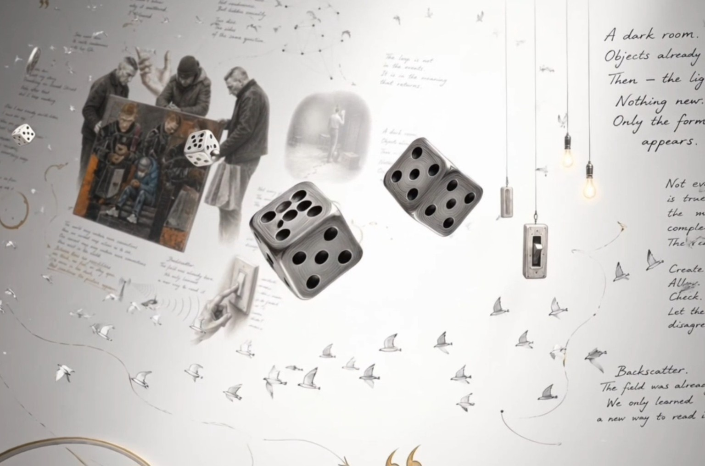
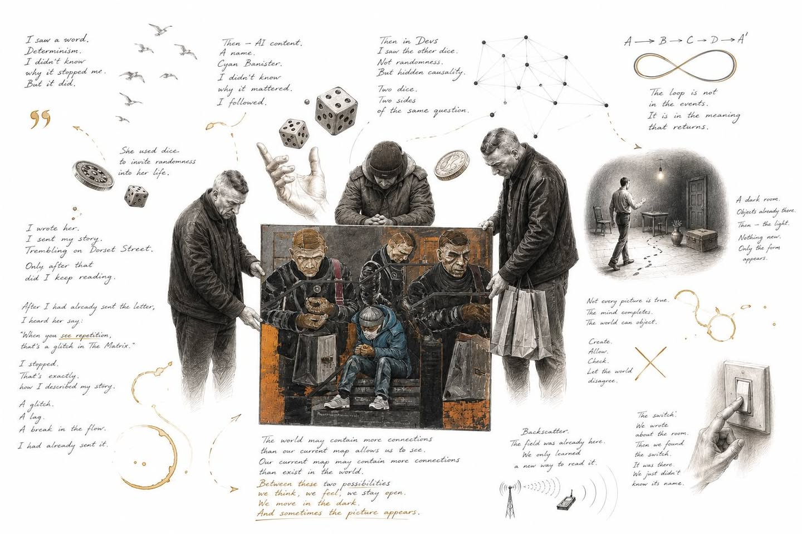
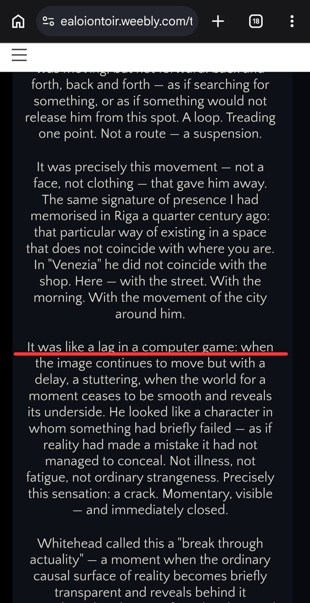
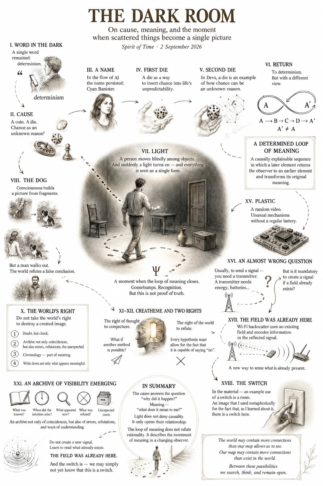
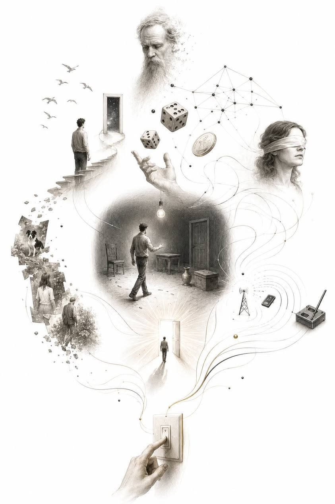

There is a particular kind of not knowing that is hard to notice. Ordinary ignorance is easy to identify: I do not know a name, so I look it up; I do not understand how something works, so I read the instructions; I do not know the way, so I open a map. There is an empty space between me and the answer, and at least I know that it is empty.
But there is another kind of not knowing. All the necessary things are already before us. The facts are known, the events have happened, the words have been heard; we have even taken some of the actions ourselves. And still, something is missing. There is no form.
We look at separate points without knowing that a line might be drawn between them. Sometimes because there really is no line. Sometimes because human consciousness is not yet able to see it. And sometimes—and this is the most dangerous possibility—because consciousness will draw the line itself and then forget that it was the one holding the pencil.
In recent days I have been thinking more and more that much of my Spirit of Time takes place in precisely this interval. Between an event and its meaning. Between what has already happened and the moment when we first understand what, exactly, has happened to us.
And this time it began with almost nothing. With a word.
A Word in the Dark
I saw a short fragment of a conversation; I think it was on Facebook. At that point I had not yet watched Devs, was not specifically studying the philosophy of determinism, and had no intention of writing about free will. I was roughly familiar with the concept, but it existed somewhere on the periphery, like the name of a town I had often seen on a map but never visited.
And for some reason the word stayed with me: determinism. Why, I do not know.
Today we could construct any number of explanations. The algorithm showed me the video based on my previous viewing. My years of thinking about coincidences, causality, and time might have prepared my attention. It might have been the tone of voice. A single word might have touched another, unconscious association. Perhaps the cause was entirely banal. But all these explanations came later. At that moment there was only the word, a slight pause in attention, and a desire to watch further.
And now it matters especially to me to leave that point exactly as it was. Not to rewrite the beginning with knowledge of the ending. I did not yet understand anything. I had only entered the room.
Cause
Later I discovered that the fragment was connected with the series Devs, and began watching it. Gradually the word acquired substance.
Why did the pen roll across the table? Because someone pushed it. Why did the person push it? Because they wanted to demonstrate a particular idea. Why did they want to demonstrate it? That, too, had a cause. We can move backwards: a cause, the preceding cause, another one before that.
And then a coin appears. We toss it and call the outcome random. But the coin has a mass, the force of the throw acts upon it, it spins at a particular speed, travels through a particular medium, and strikes a surface at a particular angle. A die is more complicated. Roulette is more complicated. A human being is immeasurably more complicated. But complexity is not the same as an absence of causes.
In the classical deterministic picture, if there were an impossible observer capable of knowing all the necessary initial conditions with absolute precision, the future would cease to be a mystery, and what we call randomness might turn out to be merely a name for our ignorance. Real physics is, of course, more complicated than this picture: quantum mechanics does not allow us so easily to turn the metaphor of an absolute observer into a description of the actual world. But what concerned me then was not proving absolute determinism. It was the shift in perspective itself that caught me.
We say: it happened. Determinism replies: it continued. What seems to be a separate event may be only the visible part of a much longer causal chain.
I set the thought aside. The room remained dark.
A Name
Some time later I was doing something entirely ordinary for me: watching material about artificial intelligence. It is important to preserve the sheer ordinariness of this circumstance. I often watch such conversations; people mention other people, names travel through the network, algorithms follow up on earlier interests. So the appearance of another person in such a stream of information is not, in itself, anything extraordinary.
In one conversation involving the Liberman brothers, a name was mentioned: Cyan Banister.
I was not looking for someone concerned with randomness; I was not looking for a continuation of the subject of determinism. For some reason, the name itself made me pause. Perhaps it sounded Irish to me. Perhaps an entirely different association was at work. I do not know for certain. But once again there was that same small movement, so hard to notice as it happens: attention lingered before a reason for lingering had emerged.
I decided to see who this was. I found a page, found an interview. And there a die appeared.
The First Die
Cyan spoke about using dice for some decisions. Not as a way to predict the future—the point was almost the opposite.
A person does not choose as freely as they imagine. We go back to the familiar restaurant, take the familiar road, talk to similar people, repeat our own preferences, and call the result our individuality. Character creates habit, habit creates preference, preference creates choice, and choice returns us to a familiar life.
A die can break this small circle. Its fall may have physical causes, but the person does not know the result in advance. So, by handing the decision over to it and agreeing to act on whatever comes up, they gain a chance to step outside their habitual biographical trajectory.
Unexpectedly, this struck me very deeply. There came that familiar inward “wait.”
I wrote to Cyan. I sent her my story Trembling on Dorset Street—a documented account of a coincidence that once became one of the sources of Spirit of Time.
https://ealoiontoir.weebly.com/trembling-on-dorset-street.html
And only afterwards did I begin to understand why I had decided to write to her in the first place.
This sequence now seems essential to me. We usually imagine human action like this: understanding, decision, action. Here it was different: encounter, attention, impulse, action, and only then understanding. First I wrote. Only then did I begin to understand why it was to her.
The Letter That Had Already Been Sent
But something else happened after I sent it, and here again it matters to me not to confuse the sequence.
I did not first study Cyan Banister’s entire world, discover in it a set of ideas resembling mine, and only then decide to write. It was the other way round. Her name made me pause, then her attitude towards randomness and dice; an impulse arose, and I sent Trembling on Dorset Street. The letter had already gone. Only after that did I continue reading and watching her interviews, trying to understand better the person to whom, a few hours earlier, I had for some reason decided to send this story.
And then I encountered another detail. When talking about coincidences, Cyan uses an image that was disconcertingly familiar. She speaks of them as glitches in The Matrix: faults, moments of repetition after which it is worth paying attention.
I stopped, because I had already used precisely this vocabulary to describe my own experience on Dorset Street. The strangeness there lay not only in the coincidence of place and person. The movement itself felt like a disruption of the scene’s normal course—a return, a repetition, almost a lag, almost a glitch, as though for a moment something had faltered in the familiar continuity of the world. And this was the very story I had sent before learning that she used almost the same image.
Here again it is very easy to take one step too far and say that somehow I knew whom I was sending the text to. But I do not know that. There are enough ordinary explanations. The language of Matrix, glitch, and simulation has long been part of contemporary culture; people interested in strange coincidences can arrive quite independently at similar metaphors; and the resemblance became noticeable precisely because my own text had already made me sensitive to this subject.
So it is not the coincidence of words itself that is interesting. It is the order. First there was my story, then its language, then a person about whom I knew almost nothing, then an impulse and an action—and only after the action did the coincidence of imagery emerge. A small sequence takes shape: image, impulse, action, new information, return to the image. Later knowledge once again changes the meaning of an earlier act. It does not prove the act’s hidden cause, but it makes me go back and ask why this particular story was sent before I knew about the coincidence of language.
Perhaps the answer is entirely ordinary. The choice might have been prepared by many faint indications that consciousness had not yet managed to put into words, and after sending the story I simply became especially sensitive to matching motifs. But then an equally interesting question arises: how much information takes part in our choices before we are able to explain them?
And here the original theme of determinism returns from another direction. An impulse subjectively experienced as inexplicable is not necessarily without a cause. Perhaps the cause exists before our knowledge of it. Or perhaps the meaning of an act really does emerge only afterwards.
I do not yet know. So I leave a sequence here, rather than a conclusion. First I sent the letter. Then I continued reading. And only then did I discover the glitch.
The Second Die
I continued watching Devs. And one day a die appeared again, only now it stood on the opposite side of the question.
Is a coin random? Not if the conditions of the toss are known. Roulette? The same. A die? Mass, movement of the hand, spin, surface, collisions. What for one person is an instrument for introducing randomness into life becomes here an example of why randomness may be merely a consequence of our ignorance of causes.
And at that moment two dice stood side by side. The first said: relinquish your own choice for a moment and let unpredictability in. The second: what seems unpredictable is not necessarily without a cause.
And suddenly I remembered where this story had begun. With determinism. A word that once meant almost nothing to me had passed through an entirely different stream of information, someone else’s name, an interview, randomness, my own impulse, a letter, a die—and had returned through another die to the original question.
But the place I returned to was no longer the same.

Return
We can picture this very simply. An ordinary causal sequence:
A → B → C → D
But sometimes something else happens:
A → B → C → D → A′, where A′ ≠ A
Nothing physically returned to the past. Event D did not change event A. What changed was its meaning for the observer. What at point A had been an almost empty word, after passing through B, C, and D, was filled with experience that did not yet exist at the moment of A.
It was here, in the conversation, that a working name emerged: a determined loop of meaning. Not as a law, not as a new physical mechanism, not as proof of synchronicity, but as a descriptive hypothesis.
A determined loop of meaning is a causally explicable sequence of events in which a later element unexpectedly returns the observer to an earlier element and transforms its original meaning.
The word “determined” here does not assert the absolute determinism of the Universe. It means something else: the existence of such a loop does not require us to abolish causality. An algorithm may have causally shown the video; a name may have causally prompted an association; priming may have increased sensitivity to a particular subject; a search causally led to an interview. Each point may have an entirely ordinary history.
The strangeness, if it exists at all, does not lie within the individual points. It lies in the form of their sequence. The causal chain moves forwards. Meaning returns backwards.

Light
But here the next question arose: when, exactly, does the loop emerge?
At the moment of A? No, the observer knows nothing about it then. At B? No again. For the person there are only separate events: a word, a name, a die, a letter, a second die. And only afterwards comes the strange moment when they first find themselves beside one another.
I began imagining this as a person in a completely dark room. They do not know its dimensions, do not know where the door is, do not know what is inside at all. They reach out a hand and find one object. Move away, touch a second. Make a mistake, return, stumble into a third. They can remember them, but do not yet know how they are arranged in relation to one another.
Then, for a moment, the light comes on. And nothing new appears in the room. The table was already there. The chair. The door. The object by the wall. Only one thing is new: for the first time, their arrangement in relation to one another is visible.
No event appears. A form appears.
Goosebumps
Sometimes such a moment is accompanied by an entirely bodily experience: goosebumps, a pause, a sudden sense of recognition—there it is.
Here an enormous temptation arises, because the intensity of the experience easily turns into an argument: if the feeling is this strong, then the connection I have found must be real. But this is a mistake. Human consciousness is capable of feeling absolute certainty both when it has actually discovered something and when it has constructed an extraordinarily convincing illusion.
So the numinous experience must be preserved as a fact. But only as a fact of experience. We can designate the moment of collapse with the symbol Ψ, and then:
A → B → C → A′ → Ψ, but Ψ ≠ proof
Goosebumps say: pay attention. They do not say: you are right.
The Dog
I received an almost perfect lesson in this limitation during an ordinary walk. A fragment of human movement appeared behind some bushes. I saw an arm, and the manner of movement reminded me of a woman I knew. Then a black-and-white dog appeared, roughly the size of the one I knew.
https://www.facebook.com/share/p/19eVzd7EZF/
And something astonishing in its ordinariness happened: this was enough. Consciousness completed the picture. The woman. Her dog. I could almost see a person I had not yet seen.
Then a man emerged from behind the bushes. And when I looked at the dog again, it too turned out to be different. The colouring matched, the size roughly matched, but this was another dog.
What had happened a few seconds earlier? The world had provided insufficient information, and consciousness offered it the nearest suitable model. The first fragment prepared the woman, the woman prepared the dog, the dog confirmed the woman. Each subsequent element reinforced the preceding one—until the world had a chance to object.
A man emerged from behind the bushes.
The World’s Right
It was then that a principle took shape without which all further inquiry loses its meaning: do not deprive the world of the right to destroy the image you have created.
Consciousness must fill in reality; we never have all the data. But there is an enormous difference between a provisional model and a system that no longer allows its own refutation. Every beautiful construction of meaning must keep its own man behind the bushes—a fact capable of saying “no.”
If no possible fact can change the picture any longer, we are no longer investigating the world. We are protecting the picture from the world.
The Danger of a Beautiful Form
This is especially important for Spirit of Time, because a person who observes coincidences for a long time gradually becomes a professional at finding them. Which means they simultaneously become a professional at making potential mistakes.
We notice names that coincide and forget the thousands of names that led nowhere. We remember the premonition followed by an event, and do not archive the dozens of premonitions followed by nothing. We remember the loop that closed and fail to notice the broken lines.
In this way an entirely honest archive can arise that, taken as a whole, creates a false picture. Not a single document is forged, but selection has already produced a metaphysics.
So negative cases must be part of the archive: names that caught our attention and disappeared; goosebumps followed by nothing; coincidences undone by dates; mistaken recognitions; premonitions with no outcome; hypotheses destroyed by the next fact. This is not rubbish. It is the control group.
An Archive Before Meaning
And from this comes another rule: we must try to record an event before it has become a story.
When did the word appear? What did I actually know then, and what did I not yet know? When did the name interest me, and why, as I understood it at the time? When did the impulse arise, when did the action occur, what became known afterwards? At what moment did the connection emerge? What did memory add later?
Because once meaning appears, memory begins working like a magnificent film editor. It cuts out empty frames, shortens pauses, chooses effective transitions, adds music. And gradually we begin to feel that we knew from the very beginning where we were going. But we did not know.
So a formula is becoming more and more important to me: archive not only events—archive not knowing.

The Createme
At this point another concept that had long interested me became clearer too: the createme.
Not every thought that arises is a createme. A createme appears where something does not fit the existing picture and for that very reason forces the picture itself to change: an error, an anomaly, a strange analogy, a violated expectation, a question that at first seems almost wrong.
The dog behind the bushes becomes a createme not because I made a mistake—we make mistakes all the time. It becomes a createme when the mistake generates a different question: what, exactly, was I seeing before I saw what was actually in front of me?
A new model emerges from a small error. Consciousness does not simply receive the world—it constantly offers the world a preliminary version of itself. And the world either allows that version to survive or forces it to be rebuilt.
So a createme is not a ready-made truth. It is a productive disruption of the matrix.
Two Rights
And here a pair gradually emerged that may be more important than any individual hypothesis: thought’s right to entertain a possibility, and the world’s right to refute it.
The first is necessary because without it, thinking remains within the picture already known. If every new thought is destroyed by the question “where is the evidence?” at the moment of its birth, many hypotheses will never arise at all. But the second is no less necessary: if the beautiful origin of a thought exempts it from testing, the createme becomes a fantasy that has appointed itself a discovery.
So discipline must be almost the opposite at the two stages.
At the birth of a hypothesis—maximum freedom. In testing it—maximum rigour.
First: what if? Then: how can I make it possible for the world to tell me “no”?
And Then Plastic Appeared
And it was here that an event occurred which unexpectedly made this entire text look at itself.
The image of the dark room had already been formulated. We had already spoken of a person moving among objects, unable to see anything, until at some point the light comes on and separate things become a single picture.
After this I was simply watching another video. At first I saw some kind of plastic mechanical component. I was not looking for a switch then, and was not building any connection with the dark room. What interested me was a very simple technical oddity: how could this mechanism, without the usual battery, transmit an impulse at all?
I began looking into it. And arrived at the principle of Wi-Fi backscatter.
An Almost Wrong Question
And here what struck me was less the technology itself than the course of the thought.
There is a small device; it needs to transmit information. The usual formulation of the problem assumes that a transmitter is needed, that the transmitter needs energy, and therefore that we must reduce power consumption and improve the battery, the antenna, the electronics. These are reasonable questions. But hidden inside all of them is one premise: to transmit a signal, we must create it.
And suddenly another question appears: must we create it? A radio-frequency signal already exists around the device. We can use the existing field and encode information by changing the characteristics of the reflected signal.
This is what struck me. Not new energy, but a new way of seeing the energy already present. Not a new world, but a new way of putting a question to the same world.
And suddenly I understood why this technical story had caught me so deeply. It was an almost perfect createme. Instead of “how do we make a better transmitter?” comes “do we need a transmitter in the old sense at all?”
The Field Was Already Here
And here the metaphor of the dark room itself changed. Until then I had imagined a person looking for a switch: the room is dark, there must be light somewhere, it has to be found.
But backscatter offered another image. What if the problem sometimes lies not in something being absent? What if what is needed is already present, but the existing model of the problem prevents us from seeing how to use it? We are used to looking for the source of a signal—but the signal is already passing through the room. We look for additional information—but sometimes the information is already before us. It is not a fact that is missing. It is an allowable relationship between the facts.
From this came the formula: the field was already here.
This is not an assertion that any mystical field of meaning exists. The physical radio field in backscatter is a real physical quantity; the “field” of meaning here is only a metaphor, and turning one into proof of the other would be a serious mistake. But as a model of thinking, it proved extraordinarily precise. Perhaps some discoveries happen not because new information appears in the world, but because the space of permissible ways to connect information that already existed changes.
The Switch
We began integrating this thought into the text: the dark room, the existing field, the objects already inside, the possibility of seeing a relationship between them.
And only then did something happen that made me stop once more. In the material on backscatter, an example of its use appeared—a switch in a room.
There was an almost literal return of the image here, because the switch had already existed in our conversation before I became aware of its presence in the technical material. First: the dark room, movement by touch, the light comes on. Then: a video seen by chance, an incomprehensible plastic mechanism, technical curiosity, backscatter, understanding the existing field, integrating the principle into the text. And only then—the switch.

Do Not Rush
And here it is especially easy to make a mistake. To say “there, it is a sign” and close the story. Or to do the opposite—say “an ordinary coincidence” and close it as well. Both answers are too quick.
Because we have something more interesting than an answer. We have the order in which knowledge emerged.
If I had first seen the switch and then invented the dark room, everything would be neatly explained by direct priming: I saw an image, I used the image. But the sequence, as far as it has now been reconstructed, was different. The image of the dark room existed earlier. Then the technical material appeared, and at first an entirely different aspect of it interested me. Then a conceptual connection emerged. And only afterwards did I become aware of the literal return of the original image.
This proves nothing about the Universe. But it makes chronology important.
Chronology as Part of Epistemology
And here, for the first time, I understood clearly: chronology becomes part of epistemology.
It is not enough to know that two events coincided. We need to know what existed earlier, what the observer knew then, what they could not have known, what was recorded, what emerged afterwards, and when the interpretation appeared.
This is especially important for the study of synchronicity, because there is an enormous difference between “after the event I found a suitable image in the past” and “the image was formulated and documented before the subsequent correspondence became known.” The latter still does not prove an unknown mechanism, but it reduces the scope for purely retrospective editing.
So the origin of a thought, its provenance, becomes part of the testimony. Not proof. But weight.
A Loop Within the Text
And here something almost amusing happens: the concept of a determined loop of meaning, which arose earlier, now itself receives a new example.
The original scheme was this: A → B → C → D → A′, where a later element returns the observer to an earlier one and changes its meaning. But the case of the dark room allows us to refine it:
A₀ → B → C → H → A₁
where A₀ is an image already in existence, H is subsequent material whose content is not yet known at the moment of A₀, and A₁ is the return of the original image after the appearance of H.
If a strong recognition then arises: A₀ → B → C → H → A₁ → Ψ. But again: Ψ ≠ truth.
The most interesting thing lies not even in the formula, but in the fact that a text trying to describe the mechanism by which a form of meaning emerges itself entered the process it was describing. We imagined the dark room. And then a switch entered the room.
The Strongest Objection
Now we must do what our own method demands: try to destroy it all.
Perhaps the following happened. I was already deeply immersed in the subject; my attention was attuned to randomness, fields, connections, loops, light, the room. The algorithmic environment kept supplying material close to my interests. The video of an unusual device attracted my attention precisely because my brain was already looking for disruptions of the familiar model. Once backscatter appeared, I became more sensitive to any details that could fit the existing metaphor. And when the switch appeared, a powerful retrospective linking took place.
Perhaps. This is a perfectly serious explanation, and it must remain alongside all the more interesting hypotheses.
But even if it is entirely correct, a phenomenon worth investigating remains: how does causally organised consciousness discover or create forms of meaning within a causally organised world? That is already a sufficiently large question. It requires no supernatural causality.
Cause and Form
Imagine a river. We can explain the movement of each portion of water physically: gradient, pressure, friction, gravity, terrain. But if we rise high enough, a meander becomes visible. No individual drop contains the form of the whole river. Causes belong to the movement of the elements, while form becomes visible at another scale of description.
I am not claiming that a form of meaning is objective in the same way as the bend of a river—that would be an unjustified leap. But the analogy lets us ask a more careful question: might the causality of individual events and the form of their experienced sequence belong to different levels of description of the same unfolding process?
Determinism asks why B followed A. The psychology of attention asks why, among many instances of B, I noticed this particular one. The study of meaning asks why A and B became a single configuration for me. These questions do not necessarily destroy one another.
The Observer
Because the loop exists not only in events. But not only in the mind either. It arises in the relationship.
The world provides events. The observer brings memory, history, expectations, fears, desires, knowledge, mistakes, and a state of attention. If I had not changed between A and A′, no return would have taken place: the die could have remained simply a die, the switch a switch, the name a name.
The observer, then, is not a passive camera; they take part in the emergence of form. But this participation does not automatically mean that the form is invented. It means only that the question is more complicated: what, exactly, arises between the world and the observer when events that are causally independent from the observer’s perspective begin to be experienced as a single structure?
Where the Boundary Lies
Perhaps this is precisely the territory that interests me most.
The world may contain more relationships than our current model allows us to see. But our current model can create more relationships than exist in the world. Both possibilities are real. The first calls for intellectual courage, the second for intellectual discipline.
So the createme and refutation must exist together. Without the createme, we will keep improving the battery forever, without asking whether a signal of our own is needed. Without refutation, we will see switches even where there have never been any.
A very narrow space remains between these dangers. And it seems that this is where the real Spirit of Time resides.
An Archive of Becoming Visible
So I think of it less and less as an archive of coincidences. Even the definition “an archive of synchronicities” seems insufficient to me. Something else interests me more: an archive of becoming visible.
Not only “what happened?” but also “why did this particular thing become noticeable?” What existed before understanding? What did the observer know at a particular moment? What impulse arose before an explanation? When did the hypothesis appear? What changed the initial model, what confirmed it, what destroyed it? What was forgotten, and what was added after the fact? Where did goosebumps arise, and what remained after them? And most importantly: what fact would make me relinquish the form I had found?
Then the archive ceases to be a museum of proofs. It becomes a laboratory of one’s own attention.
The Field
And still I return to backscatter, because the simplicity of its image will not let me go.
The field already exists. The signal passes through space regardless of whether a particular device knows how to use it. Most objects simply reflect it. But a particular system can turn a change in reflection into information.
I do not know whether anything exists that could literally be called a field of meaning. I have no grounds to assert this, and that is precisely why I do not want to turn a beautiful metaphor into bad physics. But there is a more modest hypothesis.
Human thinking is constantly surrounded by more potential relationships between things already in existence than its current model of the world allows it to see.
Sometimes a discovery adds a new fact. And sometimes it changes the way we interact with what was already there. Not creating a new signal—learning to read the reflection.

The Room Again
I find myself at the beginning again. The dark room. Only now it no longer means quite what it meant to me when it first appeared in the text.
At first I thought like this: a person is in darkness, moves by touch, finds objects; then the light comes on, and they see a form.
Now I allow for another possibility. Perhaps the room was never absolutely empty and absolutely silent. Signals were already passing through it; objects were already reflecting them. Most reflections were noise. Some connections I created myself. Some will turn out to be mistaken. Some will disappear when the man emerges from behind the bushes. Some, perhaps, will withstand another test.
But the movement itself begins at the moment when a person allows themselves to think: what I am looking for may already be here; it was simply my earlier way of looking that prevented me from seeing it.
This is not yet a discovery. It is only a door for a hypothesis.
After the Light
And so the real moment of inquiry does not begin when the light comes on. It begins afterwards. When the first goosebumps have passed, when the picture already seems convincing, when we very much want to leave everything as it is.
And that is exactly when we must turn the light off again. Go back. Feel for the objects with our hands. Check distances, dates, records, sequence. Ask what I actually knew then. Find negative cases. Let another person look at the same room. And be ready to discover that the table stood somewhere quite different from where I thought.
This is the price of the right to a createme. A thought receives almost limitless freedom at birth. But after birth it becomes part of the world—which means that the world gains the right to argue with it.
Order
And now I can return to today’s episode without needing to explain it.
First there was the dark room. Then a video encountered by chance. At first I saw only plastic and a mechanism without the usual battery; then I wanted to understand, and backscatter appeared. Then came the thought: the field was already here. I brought it back into the text; it changed the metaphor of the room. And only after that did the switch reveal itself.
We can call this a coincidence. We can investigate it as priming. We can consider it another loop of meaning. We can keep the Jungian question of synchronicity beside it without turning that question into an answer.
For now, something else seems more appropriate to me: rather than choose, record the course of events as precisely as possible. Because it is the order that is the most valuable material here. Not the result. Not the explanation. The path by which understanding emerges.
What Remained
I began with determinism, with the question of whether an event can be random if it has a cause. Now the question seems too narrow to me.
Perhaps causality and meaning are not rivals at all. Cause speaks of how an event came into being. Meaning speaks of what it entered: memory, a story, another sequence, the observer’s life, a form that until this moment did not exist for them. This does not mean that meaning exists independently of a human being. But neither does it automatically mean that it is arbitrary.
For now I do not know where this boundary lies. And perhaps that is precisely why it is worth continuing. Not in order to prove one day that all coincidences are messages. Nor to prove the opposite—that all experienced meaning is merely an error of the brain. Both positions shut down inquiry too quickly.
I am more interested in leaving the room accessible. With the right to enter. The right to make a mistake. The right to notice a strange object. The right to ask an almost wrong question. The right to feel goosebumps. And the duty afterwards to check whether the object really was where I saw it.
Perhaps this is how the method of Spirit of Time gradually takes shape: entertain the impossible without declaring it true; record the strange without turning it into a sign; see a form without forgetting that consciousness knows how to fill it in; preserve chronology before memory turns it into a plot; and, having felt with one’s whole body that the light has finally come on, still allow the world to approach the switch.
Because the world may contain more connections than our present picture allows us to see. But our present picture may contain more connections than exist in the world. Between these two possibilities a small interval remains. There the createme resides, there a loop of meaning emerges, there a hypothesis is born, and there too the possibility of error exists. And perhaps that is where real thinking begins.
Not at the moment when a person says “I have found it.” But a little earlier—when they are still standing in the dark, reaching out a hand and touching something whose name they do not even know yet. And a little later—when the light has already come on, all the objects have suddenly found their places, the picture seems almost inevitable, but the person still leaves an empty space beside them for the world, which may enter and say:
no.
Or—far more rarely—destroy nothing.
Then we can look once more. Not because we have obtained proof of the Universe’s secret workings, but because the possibility with which everything once began has withstood another test: perhaps we do not always need to create what we think is missing. Sometimes we first need to change the question. Look around. And allow for this: the field was already here. And the switch—we simply did not yet know it was a switch.
АЦХ